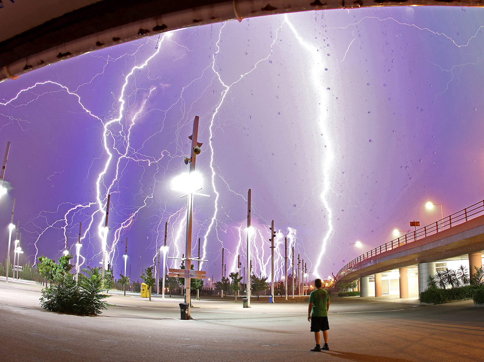
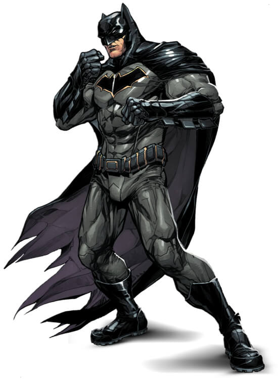
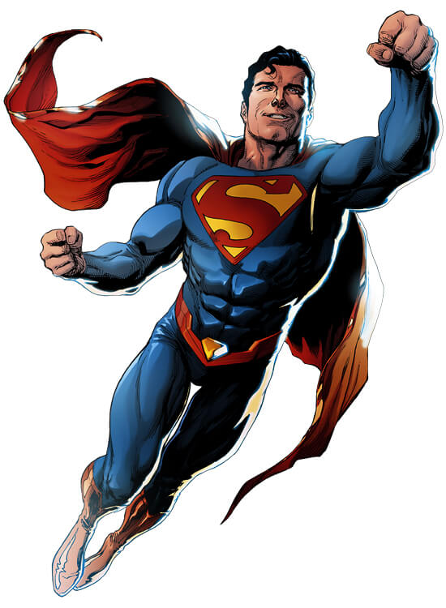
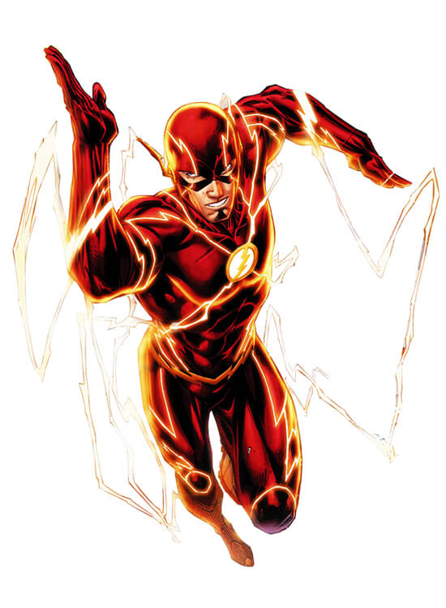
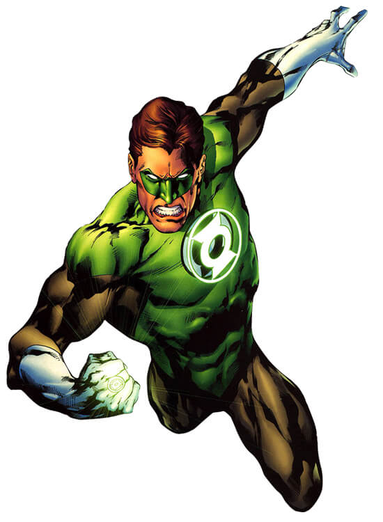
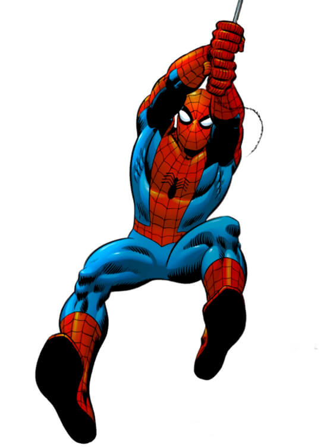

Féministe avant l’heure, Wonder Woman fait elle aussi partie intégrante de la culture --> pop depuis le début des années 40. Membre fondatrice de la Justice League dans les comic books, elle est --> rapidement devenue tout aussi essentielle à l’univers cinématographique de DC.
| # | Nom | Nom réel | Profession | plus d'infos |
|---|---|---|---|---|
|  | Batman (DC) | Bruce Wayne | Propriétaire de Wayne Enterprises | |
|  | Superman (DC) | Clark Joseph Kent | Photographe | |
|  | The Flash (DC) | Barry Allen | Scientifique de la police de Central City | |
|  | Green Lantern (DC) | Barry Allen | Scientifique de la police de Central City | |
|  | Spider-Man (MARVEL) | Peter Benjamin Parker | Justicier, aventurier, inventeur, PDG de Parker Industries |